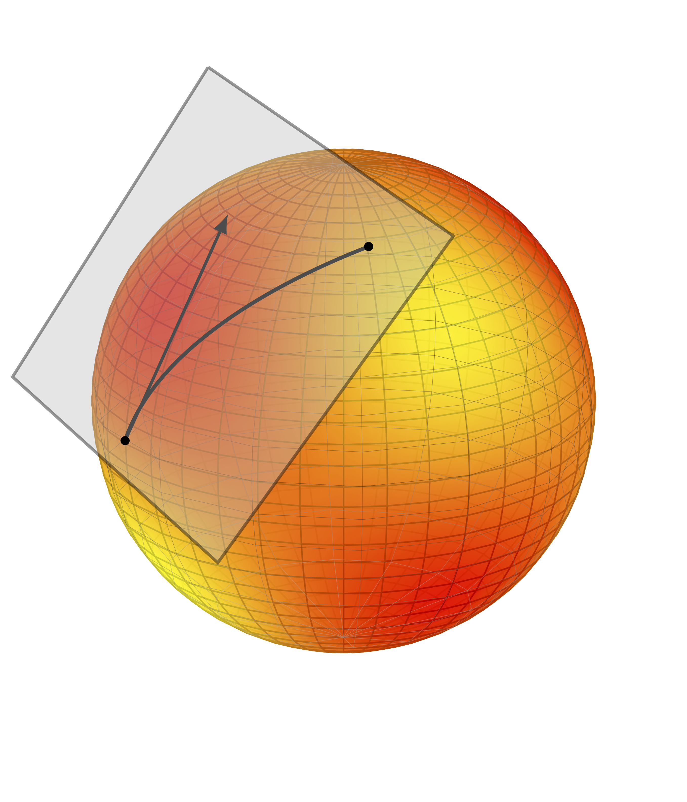

|
Data-driven control
 |
Learning, adapting, and inferring decisions directly from data is a fundamental problem in science and engineering. The advent of large data sets, improved computational resources and the ongoing AI revolution have recently triggered a renewed appreciation for data-driven approaches to the problem, where classical models are replaced by system behaviors. I am currently delving into the universe of data-driven control through the lens of geometry, optimization, and behavioral system theory. |
Dominance theory
 |
Robustness is a foundational concept in control engineering: a behavior is robust if it persists under the effect of exogenous perturbations or parametric uncertainty. While robust stabilization of equilibria is well-understood, the design of robust non-equilibrium behaviors still lacks tractable tools—despite their ubiquity in physics, biology, and robotics. I have helped develop an interconnection theory tailored to systems that switch or oscillate, showing that such behaviors can be designed using classical frequency-domain and convex optimization techniques. |
Modelling and approximation of nonlinear dynamical systems
|  | With the rapid advance of computer and artificial intelligence technologies, mathematical models of dynamical systems are playing an increasingly important role for analysis and design. The need of precision frequently leads to the inclusion of a large number of variables, thus posing a serious obstacle to achieving accurate simulations. Model reduction methods alleviate this issue by constructing simplified models that capture prescribed features of the original system, while system identification methods allow to build these models directly from measured data. In a quest towards tractable solutions, I have been exploring these issues with multiple collaborators using the most disparate tools, including differential geometry, dissipativity theory and monotone operator theory. |
Collaborators
A. Astolfi - Imperial College London and University of Rome “Tor Vergata”
G. Scarciotti - Imperial College London
R. Sepulchre - KU Leuven and University of Cambridge
F. Forni - University of Cambridge
T. Chaffey - University of Sydney
F. Dörfler - ETH Zürich
J. Lygeros - ETH Zürich
J. Coulson - University of Wisconsin-Madison
H. J. van Waarde - University of Groningen
J. Berberich - University of Stuttgart
A. Iannelli - University of Stuttgart
F. Allgöwer - University of Stuttgart
C. Cenedese - ETH Zürich / TU Delft
A. Rimoldi - ETH Zürich
M. Cummins - Imperial College London
K. Moffat - ETH Zürich
A. Sasfi - ETH Zürich
I. Markovsky - ICREA
E. Baron-Prada — AIT
A. Anta — AIT
J. Eising - ETH Zürich
Y. Tang - ETH Zürich